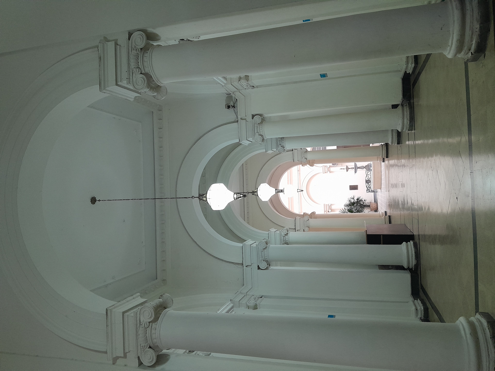
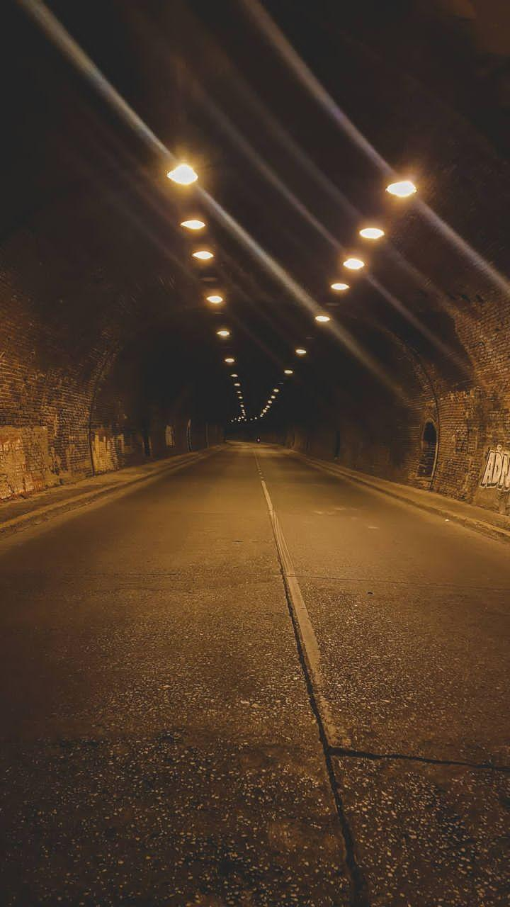
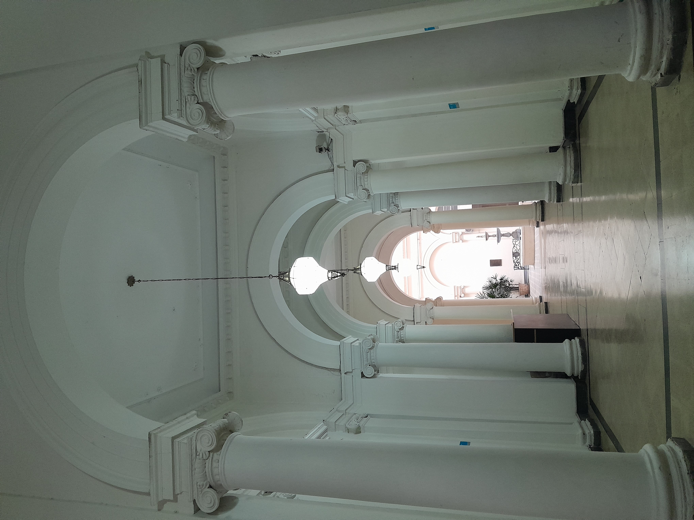
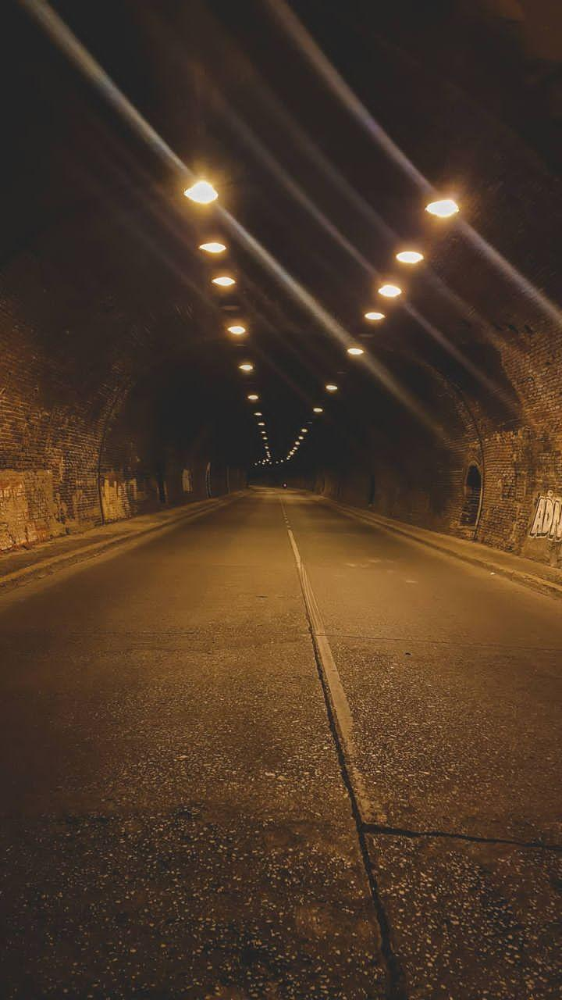
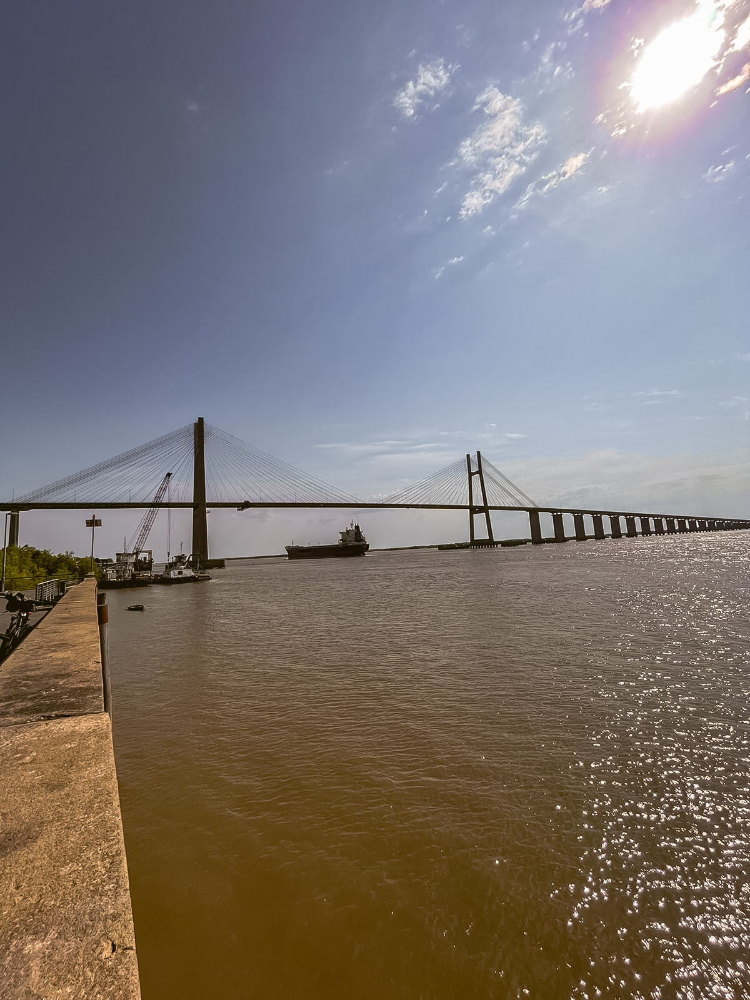
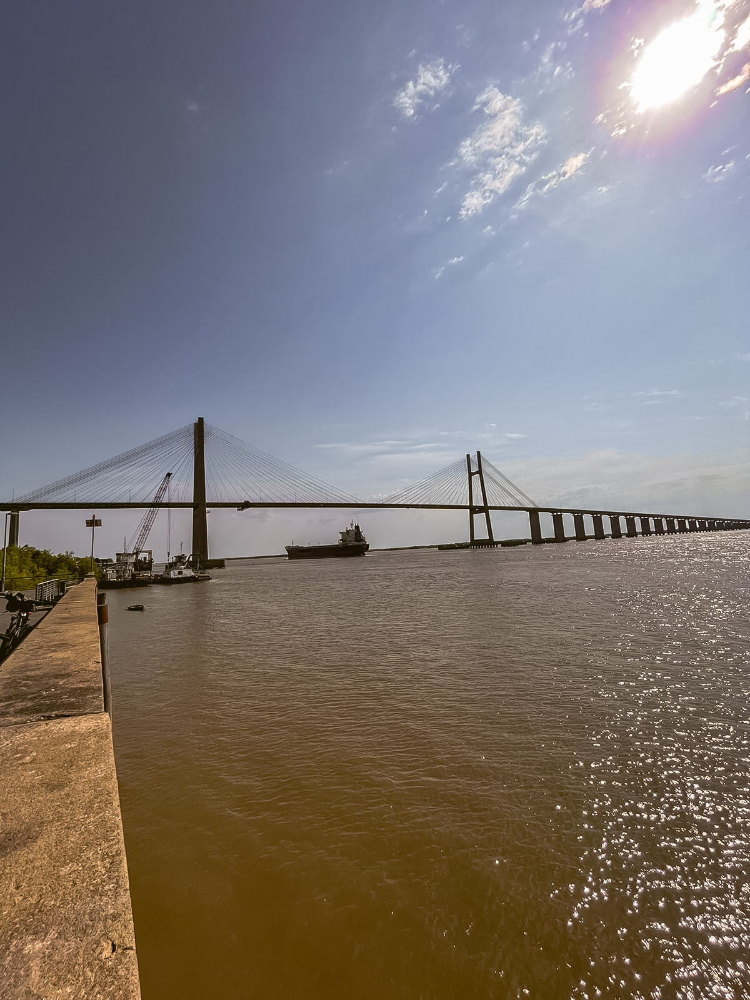
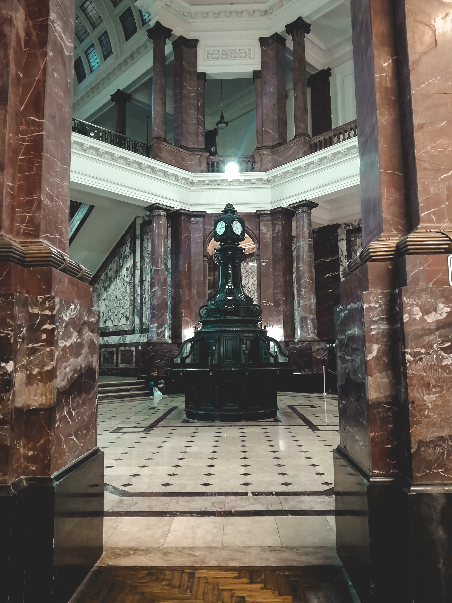
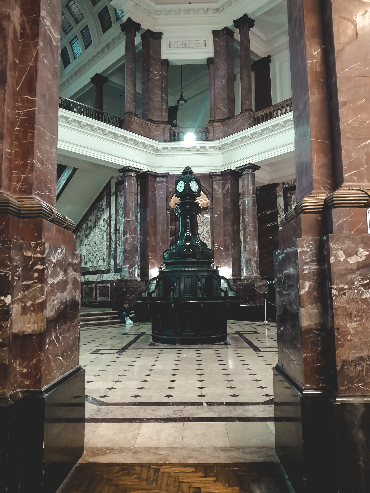

 


 

QUE HACER?
¡Bienvenidos a Rosario, la joya a orillas del río Paraná! Descubre la perfecta combinación entre historia, cultura y belleza natural que te espera en nuestra ciudad.
Museos
Dentro del arte de rosario encontramos gran variedad de museos y galerias que te llevaran a diferentes epocas, años y culturas. Entre los destacados esta El Museo de Arte Contemporáneo de Rosario (MACRO): Explora la creatividad y la expresión artística en este fascinante museo. Aunque tambien puedes visitar Museo Marc, Centro cultural parque España, Casa del artista plastico, Museo Barnes,entre otros.
Parques


Parques para pasear disfrutar y conectar con la naturaleza Sumérgete en la serenidad de Rosario recorriendolos. Explora el Parque de la Independencia, donde los lagos y la vegetación te brindan una escapada natural. Disfruta de un paseo en bote por el río Paraná y relájate en sus playas ribereñas, experimentando la calma y la belleza del entorno.